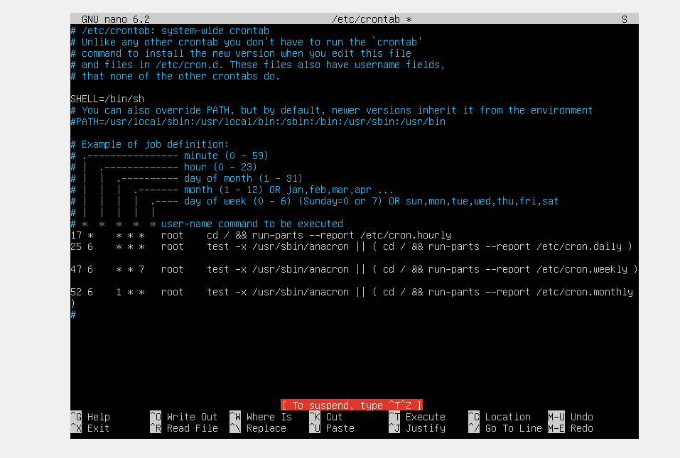

En este apartado de la pagina os enseñaremos la documentacion del proceso de las copias de seguridad en Ubuntu Server
Antes de empezar con la copia de seguiridad semanal y mensual, debemos asegurarnos de que todos los paquetes del sistema esten actualizados para asegurar que todo funciona correctamente. Para ello ejecutaremos el comando:

Una vez descargado el croantab,hay que ir a su supuesto directorio y crear un archivo que servira para crear los intervalos en los que se crearan las copias de seguiridad en Ubuntu Server
Este comando instalará el paquete del servidor DHCP en el sistema.
Con el paquete de crontab ya descargado, deberemos configurar el archivo crontab que se encontrara en la ruta "/var/spool/cron", ahi entonces pondremos cual es el intervalo deseado para la actualizacion de cada copia de seguridad, con la pagina web anteriormente mencionada.
: